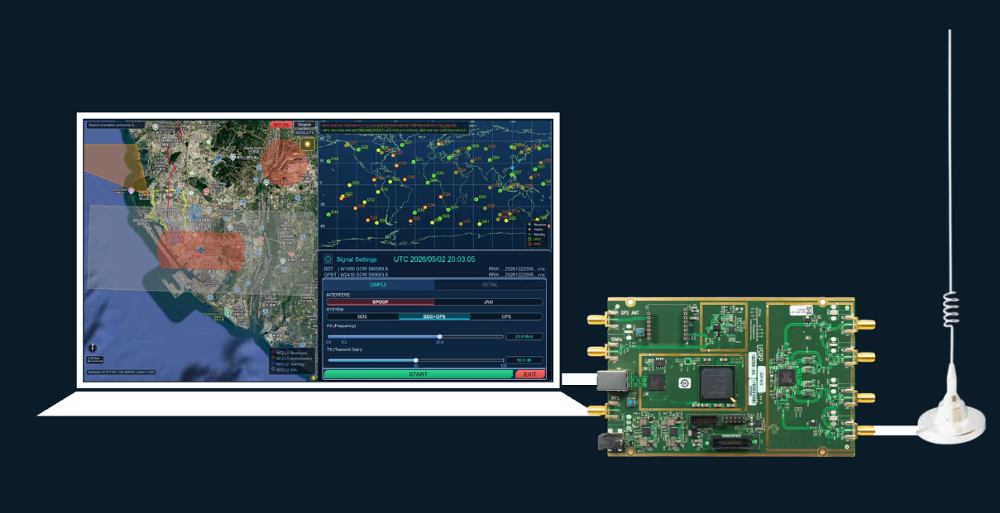
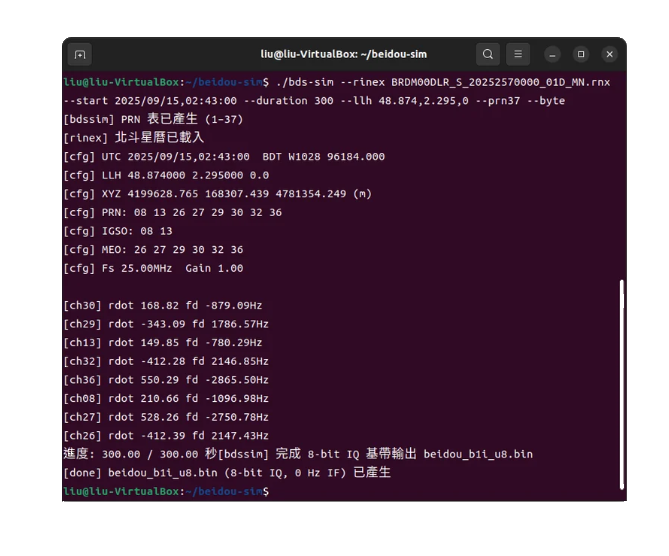
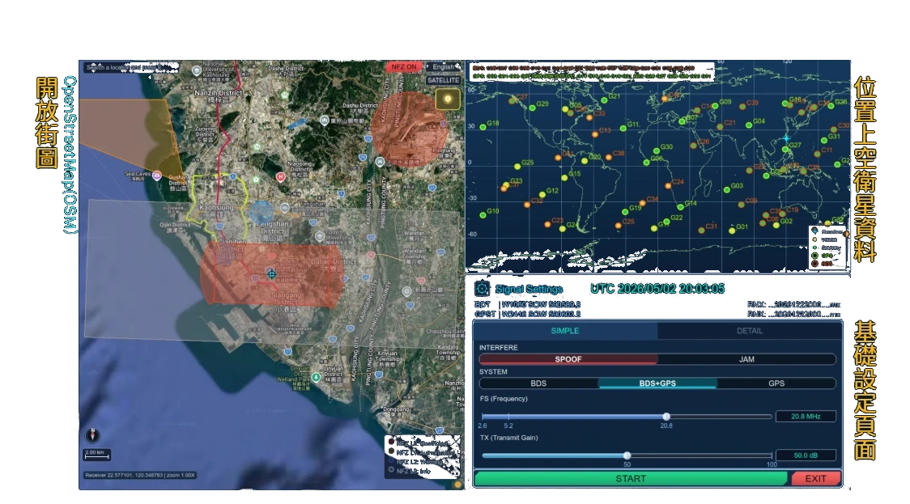
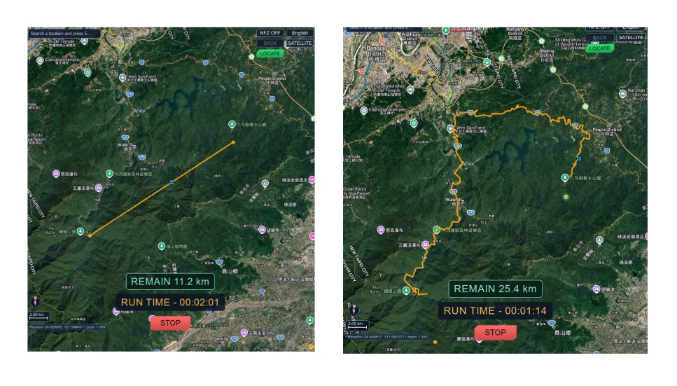
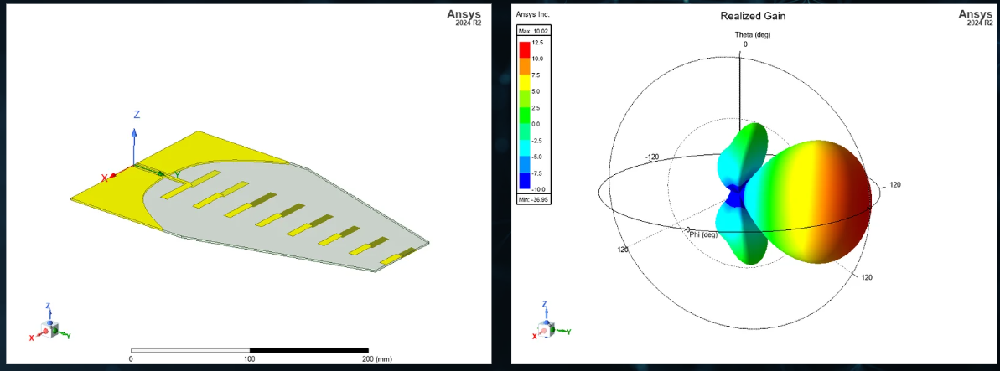

運算鎖在硬體裡
以硬體控制為主的專用儀器，價格高昂，訊號運算封在裡面，想改一個條件往往很難。
GEOTRUST · 系統特色
傳統 GNSS 測試靠昂貴、以硬體為主的專用儀器；GeoTrust 把關鍵都放到軟體上。
以下是我們在五個地方做的不一樣的選擇。
01 · 軟體
訊號怎麼算、怎麼變，決定了這套系統好不好改。
以硬體控制為主的專用儀器，價格高昂，訊號運算封在裡面，想改一個條件往往很難。
訊號的運算與變化全寫在軟體裡，硬體只負責把算好的訊號送出去；成本大幅下降，情境隨時能改。

三個部分
訊號怎麼算、怎麼變都在軟體裡，硬體只負責送出。
02 · 融合
只用單塊 SDR 發射，兩個系統就得合成到同一路訊號裡；而它們的時間、軌道與頻率都不同。
GPS L1（1575.42 MHz）與北斗 B1I（1561.098 MHz）相距 14.322 MHz。各用一個射頻通道，就要兩組硬體，還得讓兩路時間對齊。
GPS 通道與北斗通道先在基頻各自加總。射頻中心（LO）放在兩者中點 1568.259 MHz，再用數值振盪器（NCO）把 Σ GPS 移到 +7.161 MHz、Σ 北斗移到 −7.161 MHz，相加成一路複數 I/Q。
取樣率 20.8 Msps 時兩個主瓣都在頻寬內；複數 I/Q 分得出正負頻率，兩邊不會互相重疊。一台 SDR、一個發射通道，同時送出兩個星座。
03 · 介面
過去要打指令、手動下載、計算、儲存、對時才能發射，每換一次情境就重跑一輪；GeoTrust 把整個流程收進一個介面，自動完成。

命令列操作
門檻高，只有熟手用得動。

都在一個畫面上
操作難度大幅下降。
04 · 動態
訊號從靜態升級到動態：設備不再停在一個點，而是沿著一條會動的路線移動。
要自己準備一份符合物理規律的路徑檔，例如 NMEA 格式的軌跡，速度與轉彎都得合理。
使用者只要在路徑規劃介面拉出想要的路線，系統會自動補上合理的運動細節，再產生對應的訊號。

兩種路徑
在地圖上指定起訖，系統自動補上合理運動，產生對應的動態訊號。
05 · 天線
天線決定訊號往哪裡去、以及集中的程度；我們用模擬把它設計好再驗證。

HFSS 模擬
先在模擬裡把場型與增益設計好，再做實體。
這些選擇的共同方向，是把原本昂貴、封閉、難操作的測試，變成一台電腦就能完成的工具。